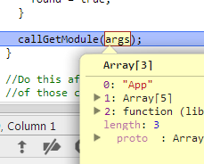
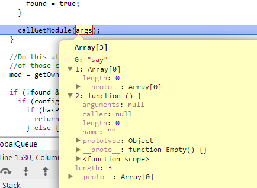
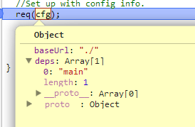
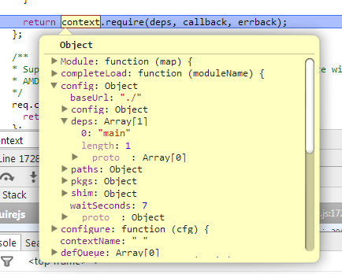
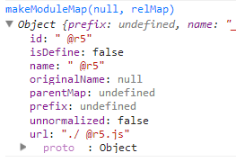
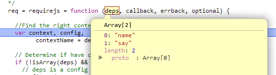
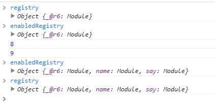
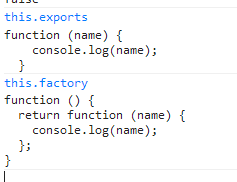

前言
这个星期折腾了一周，中间没有什么时间学习，周末又干了些其它事情，这个时候正好有时间，我们一起来继续学习requireJS吧
还是那句话，小钗觉得requireJS本身还是有点难度的，估计完全吸收这个月就过去了，等requireJS学习结束后，我们的学习流程可能就朝两个方向走
① 单页应用框架/UI库整理
② UML文档相关/重构思想相关（软性素质）
然后以上的估计估计会持续3、4个月时间，希望学习下来自己能有不一样的提高，成为一个合格的前端，于是我们继续今天的内容吧
requireJS中的队列
经过之前的学习，我们队requireJS的大概结构以及工作有了一定认识，但是，我们对于其中一些细节点事实上还是不太清晰的，比如里面的队列相关
requireJS中有几种队列，每种队列是干神马的，这些是我们需要挖掘的，而且也是真正理解requireJS实现原理的难点
首先，requireJS有两个队列：
① globalDefQueue / 全局
② defQueue / newContext 闭包
这个队列事实上是一个数组，他们具体干了什么我们还不得而知，但是我下意识觉得他比较关键......
我们这里来简单的理一理这两个队列
globalDefQueue
这个是全局性的队列，与之相关的第一个函数为takeGlobalQueue
takeGlobalQueue
/** * Internal method to transfer globalQueue items to this context's * defQueue. */ function takeGlobalQueue() { //Push all the globalDefQueue items into the context's defQueue if (globalDefQueue.length) { //Array splice in the values since the context code has a //local var ref to defQueue, so cannot just reassign the one //on context. apsp.apply(defQueue, [defQueue.length - 1, 0].concat(globalDefQueue)); globalDefQueue = []; } }
这个函数中涉及到了defQueue中的的操作，每一次有效操作后都会将全局队列清空，其中有一个apsp方法这个是数组的splice方法
该函数主要用于将globalDefQueue中的数据导入defQueue，而globalDefQueue只会有可能在define函数出被压入数据，具体原因还得往后看
所以这里的takeGlobalQueue其实就如注释所说，将全局队列中的项目转入context defQueue中
define
第二个涉及globalDefQueue函数为define


/** * The function that handles definitions of modules. Differs from * require() in that a string for the module should be the first argument, * and the function to execute after dependencies are loaded should * return a value to define the module corresponding to the first argument's * name. */ define = function (name, deps, callback) { var node, context; //Allow for anonymous modules if (typeof name !== 'string') { //Adjust args appropriately callback = deps; deps = name; name = null; } //This module may not have dependencies if (!isArray(deps)) { callback = deps; deps = null; } //If no name, and callback is a function, then figure out if it a //CommonJS thing with dependencies. if (!deps && isFunction(callback)) { deps = []; //Remove comments from the callback string, //look for require calls, and pull them into the dependencies, //but only if there are function args. if (callback.length) { callback .toString() .replace(commentRegExp, '') .replace(cjsRequireRegExp, function (match, dep) { deps.push(dep); }); //May be a CommonJS thing even without require calls, but still //could use exports, and module. Avoid doing exports and module //work though if it just needs require. //REQUIRES the function to expect the CommonJS variables in the //order listed below. deps = (callback.length === 1 ? ['require'] : ['require', 'exports', 'module']).concat(deps); } } //If in IE 6-8 and hit an anonymous define() call, do the interactive //work. if (useInteractive) { node = currentlyAddingScript || getInteractiveScript(); if (node) { if (!name) { name = node.getAttribute('data-requiremodule'); } context = contexts[node.getAttribute('data-requirecontext')]; } } //Always save off evaluating the def call until the script onload handler. //This allows multiple modules to be in a file without prematurely //tracing dependencies, and allows for anonymous module support, //where the module name is not known until the script onload event //occurs. If no context, use the global queue, and get it processed //in the onscript load callback. (context ? context.defQueue : globalDefQueue).push([name, deps, callback]); };
他会根据context是否初始化决定当前键值标识存于哪个队列，据代码看来，如果是标准浏览器应该都会先走globalDefQueue队列
然后就没有然后了，我们接下来再看看吧
defQueue
首先defQueue处于newContext闭包环境中，按照之前的知识来看，newContext每次也只会执行一次，所以这个defQueue以后会被各个函数共享
操作defQueue的第一个函数为
intakeDefines
function intakeDefines() { var args; //Any defined modules in the global queue, intake them now. takeGlobalQueue(); //Make sure any remaining defQueue items get properly processed. while (defQueue.length) { args = defQueue.shift(); if (args[0] === null) { return onError(makeError('mismatch', 'Mismatched anonymous define() module: ' + args[args.length - 1])); } else { //args are id, deps, factory. Should be normalized by the //define() function. callGetModule(args); } } }
引入定义，第一件事情就是将globalDefQueue中的项目移入defQueue中，而后将其中的项目一个个取出并执行callGetModule方法，但是我这里好像都没有效果，这块先忽略之
第二个函数为completeLoad
completeLoad
/** * Internal method used by environment adapters to complete a load event. * A load event could be a script load or just a load pass from a synchronous * load call. * @param {String} moduleName the name of the module to potentially complete. */ completeLoad: function (moduleName) { var found, args, mod, shim = getOwn(config.shim, moduleName) || {}, shExports = shim.exports; takeGlobalQueue(); while (defQueue.length) { args = defQueue.shift(); if (args[0] === null) { args[0] = moduleName; //If already found an anonymous module and bound it //to this name, then this is some other anon module //waiting for its completeLoad to fire. if (found) { break; } found = true; } else if (args[0] === moduleName) { //Found matching define call for this script! found = true; } callGetModule(args); } //Do this after the cycle of callGetModule in case the result //of those calls/init calls changes the registry. mod = getOwn(registry, moduleName); if (!found && !hasProp(defined, moduleName) && mod && !mod.inited) { if (config.enforceDefine && (!shExports || !getGlobal(shExports))) { if (hasPathFallback(moduleName)) { return; } else { return onError(makeError('nodefine', 'No define call for ' + moduleName, null, [moduleName])); } } else { //A script that does not call define(), so just simulate //the call for it. callGetModule([moduleName, (shim.deps || []), shim.exportsFn]); } } checkLoaded(); },
这个会将globalDefQueue中的队列项搞到defQueue中，然后处理一下就调用callgetModule方法，其中参数是这样的
 
callGetModule
function callGetModule(args) { //Skip modules already defined. if (!hasProp(defined, args[0])) { getModule(makeModuleMap(args[0], null, true)).init(args[1], args[2]); } }
这个时候就会由全局registry中获取当前的模块了，然后执行他的init方法，这里会加载script标签，将其依赖项载入，这里还会涉及到registry的操作，我们放到后面来学习
而completeLoad是在script标签加载结束后调用的方法
/** * callback for script loads, used to check status of loading. * * @param {Event} evt the event from the browser for the script * that was loaded. */ onScriptLoad: function (evt) { //Using currentTarget instead of target for Firefox 2.0's sake. Not //all old browsers will be supported, but this one was easy enough //to support and still makes sense. if (evt.type === 'load' || (readyRegExp.test((evt.currentTarget || evt.srcElement).readyState))) { //Reset interactive script so a script node is not held onto for //to long. interactiveScript = null; //Pull out the name of the module and the context. var data = getScriptData(evt); context.completeLoad(data.id); } },
所以我们这里来重新整理下requireJS的执行流程(可能有误)
① 引入requireJS标签后，首先执行一些初始化操作
② 执行req({})初始化newContext，并且保存至contexts对象中
③ 执行req(cfg)，将读取的data-main属性并且封装为参数实例化模块
④ 执行main.js中的逻辑，执行require时候，会一次加载name与say
⑤ 调用依赖时候会根据define进行设置将加载好的标签引入键值对应关系，执行点是load事件
所以关键点再次回到了main.js加载之后做的事情
require方法
经过之前的学习，面对requireJS我们大概知道了以下事情
① require是先将依赖项加载结束，然后再执行后面的函数回调
首先第一个就是一个难点，因为require现在是采用script标签的方式引入各个模块，所以我们不能确定何时加载结束，所以这里存在一个复杂的判断以及缓存
② 依赖列表以映射的方式保存对应的模块，事实上返回的是一个执行后的代码，返回可能是对象可能是函数，可能什么也没有（不标准）
这个也是一块比较烦的地方，意味着，每一个define模块都会维护一个闭包，而且多数时候这个闭包是无法释放的，所以真正大模块的单页应用有可能越用越卡
面对这一问题，一般采用将大项目分频道的方式，以免首次加载过多的资源，防止内存占用过度问题
③ 加载模块时候会创建script标签，这里为其绑定了onload事件判断是否加载结束，若是加载结束，会在原来的缓存模块中找到对应模块并且为其赋值，这里又是一个复杂的过程
require的整体理解之所以难，我觉得就是难在异步加载与循环依赖一块，异步加载导致程序比较晦涩
所以我们再次进入程序看看，这一切是如何发生的，这里先以main.js为例
再说main模块的加载
经过之前的学习，main模块加载之前会经历如下步骤
① require调用req({})初始化一个上下文环境（newContext）
② 解析页面script标签，碰到具有data-main属性的标签便停下，并且解析他形成第一个配置项调用req(cfg)
③ 内部调用统一入口requirejs，并取出上文实例化后的上下文环境（context），执行其require方法
④ 内部调用localRequire(makeRequire)方法，这里干了比较重要的事情实例化模块
⑤ 模块的实例化发生在localRequire中，这里的步骤比较关键
首先，这里会调用nextTick实际去创建加载各个模块的操作，但是这里有一个settimeout就比较麻烦了，所有的操作会抛出主干流程之外
这样做的意义我暂时不能了解，可能这段逻辑会异步加载script标签，若是不抛到主干流程外会有问题吧，若是您知道请告知
nextTick使用 settimeout 的原因不明，待解决/经测试不加延时可能导致加载顺序错乱
我们这里干一件不合理的事情，将nexttick的延时给去掉试试整个逻辑
req.nextTick = typeof setTimeout !== 'undefined' ? function (fn) { setTimeout(fn, 4); } : function (fn) { fn(); }; req.nextTick = function (fn){ fn();};
如此，除了script加载一块就不再具有异步的问题了，这里我们来从新理一理
深入req(cfg)
第一步调用req(cfg)

第二步处理参数并且调用require

可以看到，经过require.config(config)的处理，相关的参数已经放到了实例里面
第三步调用localRequire，并且进入nextTick流程，一个要注意的地方是这里的this指向的是context
第四步执行intakeDefines，将全局的依赖装入，这里是没有的
第五步实例化模块（makeModuleMap），建立映射关系，最后会返回类似这样的东西

第六步便将此映射关系传入getModule建立相关模块，然后传入该映射关系对象建立模块，Module类根据参数对象作简单初始化便返回
第七步调用mod的init方法真正操作该模块，这里会执行加载逻辑Module的init方法，最后会到context的load方法加载script标签，值得注意的是加载结束后这里会绑定onScriptLoad方法
第八步加载成功后会调用context.completeLoad(data.id)方法
因为之前定义过该模块了，这里只是将其取出（mod = getOwn(registry, moduleName)）然后再调用其模块init方法又会走一连串逻辑，最后再check一块结束
if (this.map.isDefine && !this.ignore) { defined[id] = exports; if (req.onResourceLoad) { req.onResourceLoad(context, this.map, this.depMaps); } }
因为每一个加载模块都会定义一个事件，在其实际加载结束后会执行之
if (this.defined && !this.defineEmitted) { this.defineEmitted = true; this.emit('defined', this.exports); this.defineEmitComplete = true; }
最后会调用checkLoaded检查是否还有未加载的模块，总之这步结束后基本上就main.js就加载结束了，这个由全局contexts中的defined对象可以看出
这里仍然有一块比较难，因为在main.js加载结束前还未执行其load事件，其下一步的require流程又开始了

contexts._.defined
Object {}
这个时候全局的defined还没有东西呢，所以他这里会有一个状态机做判断，否则最后不会只是main.js中的fn
require(['name', 'say'], function (name, say) { say(name); });
他们判断的方式就是不停的check，不停的check，直到加载成功结束
main.js中的require
因为main模块并不具有模块，所以其执行逻辑还是稍有不同的，我们现在将关注点放到main.js中的require相关逻辑
require(['name', 'say'], function (name, say) { say(name); });
首次进入这个逻辑时候事实上main.js的onload事件并未执行，所以全局contexts._.defined对象依旧为空，这里进入了实际模块的加载逻辑既有依赖项又有回调
PS：这里有一个比较有意思的做法就是将原来的nextTick的settimeout干掉这里的情况会有所不同
依旧进入context.require流程
return context.require(deps, callback, errback);
期间会碰到main.js onload事件触发，并导致
contexts._.defined => Object {main: undefined}
第二步便是这里的会创建一个模块，这个与，而后调用其init方法，这里需要注意的是传入了deps(name, say)依赖，所以这里的depMaps便不为空了
并且这里将当前回调传给factory，并且将依赖的name与say模块保存
this.factory = factory;
this.depMaps = depMaps && depMaps.slice(0);
进入enable流程，首先注册当前对象之闭包(newContext)enableRegistry中
这里有一个操作是如果具有依赖关系，我们这里便依赖于say以及name会执行一个逻辑
//Enable each dependency each(this.depMaps, bind(this, function (depMap, i) { var id, mod, handler; if (typeof depMap === 'string') { //Dependency needs to be converted to a depMap //and wired up to this module. depMap = makeModuleMap(depMap, (this.map.isDefine ? this.map : this.map.parentMap), false, !this.skipMap); this.depMaps[i] = depMap; handler = getOwn(handlers, depMap.id); if (handler) { this.depExports[i] = handler(this); return; } this.depCount += 1; on(depMap, 'defined', bind(this, function (depExports) { this.defineDep(i, depExports); this.check(); })); if (this.errback) { on(depMap, 'error', bind(this, this.errback)); } } id = depMap.id; mod = registry[id]; //Skip special modules like 'require', 'exports', 'module' //Also, don't call enable if it is already enabled, //important in circular dependency cases. if (!hasProp(handlers, id) && mod && !mod.enabled) { context.enable(depMap, this); } }));
循环的载入其依赖项，并形成模块，这里都会搞进enableRegistry中，比如这段逻辑结束前后有所不同

事实上对应模块初始化已经结束，进入了script待加载逻辑，只不过暂时卡到这里了......
然后这里会进入其check逻辑，由于这里defineDep等于2所以不会执行函数回调，而直接跳出，这里有一个关键便是我们的Registry未被清理
以上逻辑只是在main.js中require方法执行后所执行的逻辑，确切的说是这段代码所执行的逻辑
requireMod.init(deps, callback, errback, { enabled: true });
然后会执行一个checkLoaded方法检测enabledRegistry中未加载完成的模块并且进行清理，这段逻辑比较关键
function checkLoaded() { var map, modId, err, usingPathFallback, waitInterval = config.waitSeconds * 1000, //It is possible to disable the wait interval by using waitSeconds of 0. expired = waitInterval && (context.startTime + waitInterval) < new Date().getTime(), noLoads = [], reqCalls = [], stillLoading = false, needCycleCheck = true; //Do not bother if this call was a result of a cycle break. if (inCheckLoaded) { return; } inCheckLoaded = true; //Figure out the state of all the modules. eachProp(enabledRegistry, function (mod) { map = mod.map; modId = map.id; //Skip things that are not enabled or in error state. if (!mod.enabled) { return; } if (!map.isDefine) { reqCalls.push(mod); } if (!mod.error) { //If the module should be executed, and it has not //been inited and time is up, remember it. if (!mod.inited && expired) { if (hasPathFallback(modId)) { usingPathFallback = true; stillLoading = true; } else { noLoads.push(modId); removeScript(modId); } } else if (!mod.inited && mod.fetched && map.isDefine) { stillLoading = true; if (!map.prefix) { //No reason to keep looking for unfinished //loading. If the only stillLoading is a //plugin resource though, keep going, //because it may be that a plugin resource //is waiting on a non-plugin cycle. return (needCycleCheck = false); } } } }); if (expired && noLoads.length) { //If wait time expired, throw error of unloaded modules. err = makeError('timeout', 'Load timeout for modules: ' + noLoads, null, noLoads); err.contextName = context.contextName; return onError(err); } //Not expired, check for a cycle. if (needCycleCheck) { each(reqCalls, function (mod) { breakCycle(mod, {}, {}); }); } //If still waiting on loads, and the waiting load is something //other than a plugin resource, or there are still outstanding //scripts, then just try back later. if ((!expired || usingPathFallback) && stillLoading) { //Something is still waiting to load. Wait for it, but only //if a timeout is not already in effect. if ((isBrowser || isWebWorker) && !checkLoadedTimeoutId) { checkLoadedTimeoutId = setTimeout(function () { checkLoadedTimeoutId = 0; checkLoaded(); }, 50); } } inCheckLoaded = false; }
他首先会遍历enableRegistry取出其中定义的模块，并且将没有加载成功的模块标识注入noLoads数组，如果过期了这里就会报错
如果上述没问题还会做循环依赖的判断，主要逻辑在breakCycle中，因为我们这里不存在循环依赖便跳出了，但还未结束
我们这里开始了递归检测依赖是否载入
if ((!expired || usingPathFallback) && stillLoading) { //Something is still waiting to load. Wait for it, but only //if a timeout is not already in effect. if ((isBrowser || isWebWorker) && !checkLoadedTimeoutId) { checkLoadedTimeoutId = setTimeout(function () { checkLoadedTimeoutId = 0; checkLoaded(); }, 50); } }
如果模块没有载入，这里就会一直继续，直到所有模块加载结束，其判断点又在各个define方法中，define方法会根据键值改变对应模块的标识值
几个关键判断点为：
① checkLoadedTimeoutId
② inCheckLoaded
③ stillLoading
但是最终的判断点事实上来源与mod的mod.inited/fetched/isDefine等属性，所以我们这里需要来理一理
首次模块执行init方法时会执行
this.inited = true;
因为初始化时候动态的传入了enabled为true所以首次会执行enable逻辑
//nextTick requireMod.init(deps, callback, errback, { enabled: true }); if (options.enabled || this.enabled) { //Enable this module and dependencies. //Will call this.check() this.enable(); } else { this.check(); }
于是达成enabled为true的条件，这里并且会为该模块的依赖执行enable操作，并且为其支持defined事件在加载结束后会触发之
each(this.depMaps, bind(this, function (depMap, i) { var id, mod, handler; if (typeof depMap === 'string') { //Dependency needs to be converted to a depMap //and wired up to this module. depMap = makeModuleMap(depMap, (this.map.isDefine ? this.map : this.map.parentMap), false, !this.skipMap); this.depMaps[i] = depMap; handler = getOwn(handlers, depMap.id); if (handler) { this.depExports[i] = handler(this); return; } this.depCount += 1; on(depMap, 'defined', bind(this, function (depExports) { this.defineDep(i, depExports); this.check(); })); if (this.errback) { on(depMap, 'error', bind(this, this.errback)); } } id = depMap.id; mod = registry[id]; //Skip special modules like 'require', 'exports', 'module' //Also, don't call enable if it is already enabled, //important in circular dependency cases. if (!hasProp(handlers, id) && mod && !mod.enabled) { context.enable(depMap, this); } }));
这里的逻辑比较关键，而后才执行该模块的check方法
PS：读到这里，才大概对requireJS的逻辑有一定认识了
跳入check方法后便会将defining设置为true因为这里的依赖项未载入结束，所以这里的depCount为2，所以不会触发
this.defined = true;
所以下面的递归settimeout会一直执行，直到成功或者超时，这里我们进入define相关流程
define方法
这里以say为例，在加载文件结束时候会触发其define方法，这里主要向globalDefQueue中插入当前模块的队列，而这里上面做过介绍
而这里的关键会在script标签执行onload事件时候将全局队列的东西载入context.defQueue
而这个时候又会根据相关的映射id（由event参数获取），实例化相关模块（事实上是取得当前模块，之前已经实例化），这个时候又会进入check逻辑，这个时候是say模块的check逻辑
say无依赖，并且加载结束，这里会将当前模块与其返回值做依赖，这里是一个函数，这里factory与exports的关系是

然后会将当前键值右Registry相关删除，完了便会进入下面的逻辑，值得注意的是这里会触发前面为say模块注册的defined事件
PS：这里一定要注意，这里的say模块里面定义的家伙被执行了！！！
//注册点 on(depMap, 'defined', bind(this, function (depExports) { this.defineDep(i, depExports); this.check(); })); //触发点 this.emit('defined', this.exports); //关键点，用于消除依赖 this.defineDep(i, depExports);
所以，我们的整体逻辑基本出来了
结语
最后，我们来一次总结，对初次的requireJS学习画下一个初步的句点
① requireJS会初始化一个默认上下文出来
req({}) => newContext
② 加载main.js，main.js与基本模块不太一致，加载结束便会执行里面逻辑对主干流程没有太大影响
③ 执行main.js中的require.config配置，最后调用require方法
④ 调用时候会将数组中的依赖项载入，并且实例化一个匿名模块出来（mod）
因为主干（匿名）模块依赖于say与name，所以会在enable中实例化两个模块并且将当前实例depCount设置为2
⑤ 各个依赖模块也会执行加载操作，say以及name，若是有依赖关系会循环执行enable
⑥ 会执行主干模块的check操作由于depCount为2便执行其它逻辑，这里为其注册了defined事件
⑦ 执行checkLoaded方法，这里会开始递归的检查模块是否加载结束，一定要在主干模块depCount为0 时候才会执行其回调，并且会传入say与name返回值做参数
⑧ 当模块加载结束后会触发其onScriptLoad => completeLoad事件
⑨ 因为各个define模块会想全局队列压入标识的值，并且会根据他获取相关模块并且执行其init事件
10 这个时候会执行模块的实例化init方法，并且会检测该模块的依赖，say没有依赖便继续向下，将其factory方法执行回指exports（具有参数，参数是依赖项）
PS:其依赖项是在解除依赖时候注入的defineDep
11 最后所有依赖模块加载时候，最后主干的depCount也就变成了0了，这个时候便会执行类似say的逻辑触发回调
这里的关键就是，加载主干模块时候会检查器依赖项，并且为每一个依赖项注册defined事件，其事件又会执行check方法
这也意味着，每一个依赖模块检查成功事实上都有可能执行主干流程的回调，其条件是主干的depCount为0，这块就是整个requireJS的难点所在......
几个关键便是
① require时候的模块定义以及为其注册事件
② 文件加载结束define将该模块压入全局队列
③ script加载成功后触发全局队列的检查
④ 各个子模块加载结束，并且接触主模块依赖执，并且将自我返回值赋予行主模块实例数组depExports
⑤ 当主模块depCount为0 时候终于便可以触发了，于是逻辑结束
最后，小钗浑浑噩噩的初步学习requireJS结束，感觉有点小难，等后面技术有所提高后便再学习吧